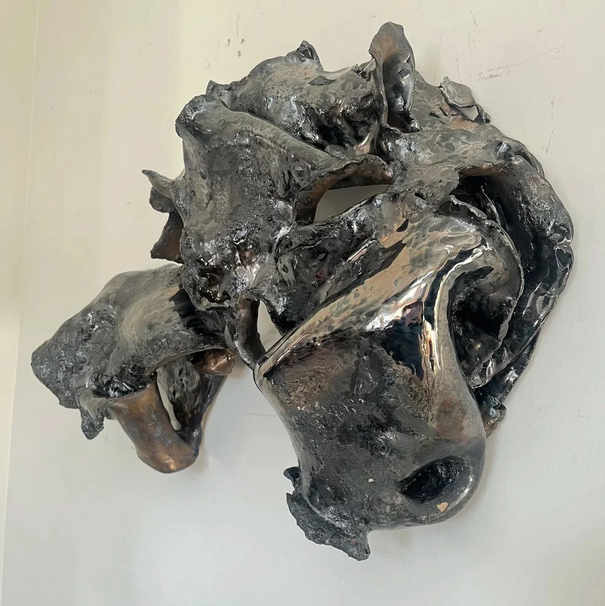

Bethany Cordero: Plurality of Structure
The Plurality of Structure is a solo exhibition of sculptural works by Bethany Cordero on view at Ignition Project Space, 3839 W Grand Ave, Chicago, from May 1–25, 2025. An opening reception will be held on Friday, May 1st from 6–9 PM.
This exhibition explores the tension between order and dissolution, the moment a system holds, and the moment it yields. Working across welded steel, ceramic, woven textiles, and sewn fragments, these sculptural works propose that structure is never singular. It surfaces and retreats, asserts itself and unravels, exists simultaneously as foundation and suggestion.
The grid surfaces sporadically in these works, a system defined as much by its absences as its appearances. Where it appears, it grounds. Where it recedes, the forms sustain their own fluidity. Order is not imposed here but arrived at, briefly, before dissolving back into the whole. The Plurality of Structure is ultimately an investigation into the threshold between what is lost and what remains.